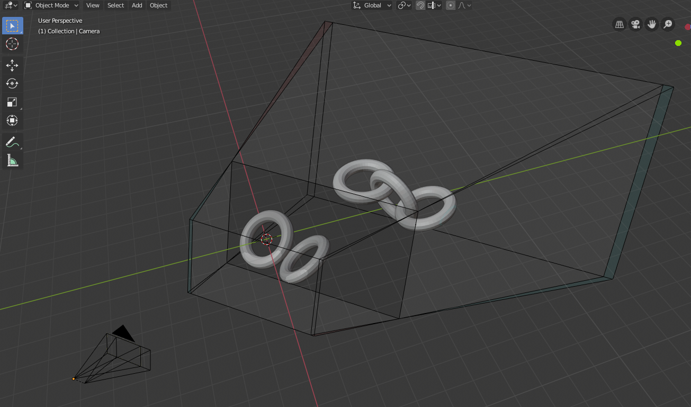
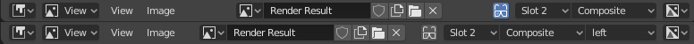
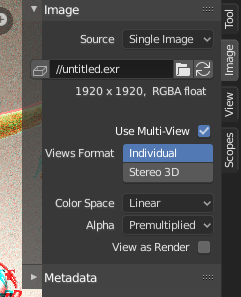

Usage¶
For example, we will take an existing blend-file that was made for monoscopic rendering and transform it to be stereo 3D ready.
Creature Factory 2 by Andy Goralczyk rendered in stereo 3D (anaglyph).
Introduction¶
Start opening up your project file, in this case turntable.blend from the Creature Factory 2
Open Movie Workshop series from the Blender Institute by Andy Goralczyk.
Turntable Creature Factory 2.
Stereoscopy Setup¶
Go to the Render Output settings and enable Stereoscopy for this scene.
Scene render views.
Note
When you turn on Stereoscopy in the scene, you get 3D preview in the viewport, as well as multiple panels that are now accessible all over the user interface.
Viewport with 3D visualization.
Camera¶
To tweak the stereo 3D parameters, select the camera in the Outliner. In the Camera panel go to the Stereoscopy tab and change the Convergence Distance.
The viewport will respond in real-time to those changes allowing you to preview the current depth value of the scene.
Stereo convergence distance.
Viewport¶
Before fine-tuning the camera parameters, you can set the convergence plane in the viewport based in your scene depth layout. Go outside the camera view and you will instantly see the convergence plane in front of the camera.
You can toggle this and other display settings in the Stereoscopy panel of the 3D Views Sidebar. In the following image, the camera’s frustum volumes are also visible.
{kind=link}
Viewport plane and volume stereo preview.
Stereo 3D Display¶
If you have a real 3D display at some point, you can change the 3D display mode in the Window menu, by calling the Stereo 3D operator. Be aware that some modes require a fullscreen editor to work.
Window menu, stereo 3D operator.
Viewport Preview¶
Before rendering your scene, you can save a Viewport Preview of the animation for testing in the final display. In the Render Output panel you can choose the output Views Format.
The options include individual files per view, top-bottom, anaglyph among others. Pick the one that fits your display requirements.
Rendering and Image Editor¶
Once you are happy with the results, you can render out the final animation. In the Image Editor you can inspect the individual views and the stereo result.
Image Formats¶
Your final animation can be saved in more robust formats. In this example we saved as cross-eyed side-by-side stereo 3D.
Side-by-side cross-eye format.
Final Considerations¶
As this guide showed, there is more to stereo 3D rendering than just generate two images. The earlier the stereo pipeline is considered the smoother it will get. The following sections are a more in-depth view of the individual components we visited in the workflow.
Window Stereo 3D Display¶
An essential component of the Stereoscopy pipeline is the ability to display the stereo image in a proper display. Blender supports from high-end 3D displays to simple red-cyan glasses. On top of that, you can set a different display mode for each window.
The display mode can be changed via the Window menu
or if you create your own shortcuts for the wm.set_stereo_3d operator.
Window menu, stereo 3D operator.
Display Mode¶
- Anaglyph
- Render two differently filtered colored images for each eye. Anaglyph glasses are required. We support red-cyan, green-magenta and yellow-blue glasses.
- Interlace
- Render two images for each eye into one interlaced image. A 3D-ready monitor is required. We support Row, Column and Checkerboard Interleaved. An option to Swap Left/Right helps to adjust the image for the screen. This method works better in fullscreen.
- Time Sequential
- Render alternate eyes. This method is also known as Page Flip. This requires the graphic card to support Quad Buffer and it only works in fullscreen.
- Side-by-Side
- Render images for left and right eye side-by-side. There is an option to support Cross-Eye glasses. It works only in fullscreen, and it should be used with the Full Editor operator.
- Top-Bottom
- Render images for left and right eye one above another. It works only in fullscreen, and it should be used with the Full Editor operator.
Note
Full Screen Stereo 3D Modes
If you have a 3D display most of the time, you will use it to see in stereo 3D, you will have to go to the fullscreen mode. In fact some modes will only work in the full window mode that hides most of the user interface from the work area. In this case it is recommended to work with two monitors, using the 3D screen for visualizing the stereo result while the other screen can be used for the regular Blender work.
Stereo 3D Camera¶
When using the Stereo 3D scene view setup, a stereo pair is created on-the-fly and used for rendering and previsualization. For all the purposes this works as two cameras that share most parameters (focal length, clipping, …). The stereo pair, however, is offsetted, and can have unique rotation and shift between itself.
Stereo 3D camera settings.
- Interocular Distance
- Set the distance between the camera pair. Although the convergence of a stereo pair can be changed in post-production, different interocular distances will produce different results due to the parts of the scene being occluded from each point of view.
- Convergence Plane Distance
- The converge point for the stereo cameras. This is often the distance between a projector and the projection screen. You can visualize this in the 3D View.
- Spherical Stereo
- Render every pixel rotating the camera around the middle of the interocular distance.
- Use Pole Merge
Fade interocular distance to 0 after the given cutoff angle.
- Pole Merge Start Angle
- Angle at which interocular distance starts to fade to 0.
- Pole Merge End Angle
- Angle at which interocular distance is 0.
Convergence Mode¶
- Off-Axis
- The stereo camera pair is separated by the interocular distance, and shifted inwards so it converges in the convergence plane. This is the ideal format since it is the one closest to how the human vision works.
- Parallel
- This method produces two parallel cameras that do not converge. Since this method needs to be manually converged it cannot be used for viewing. This method is common when combining real footage with rendered elements.
- Toe-in
- A less common approach is to rotate the cameras instead of shifting their frustum. The Toe-in method is rarely used in modern 3D productions.
- Pivot
- The stereo pair can be constructed around the active camera with a new camera built for each eye (Center Pivot) or using the existing camera and creating (Left or Right). The latter is what is used when only one eye needs to be rendered for an existing mono 2D project.
Viewport Stereo 3D¶
When you enable ‘Views’ in the Render Layer panel, a new area is available in the 3D View Sidebar region. In this panel you can pick whether to see the stereo 3D in the viewport, or which camera to see. It also allow you to see the Cameras, the Plane and the Volume of the stereo cameras.
Viewport stereo 3D settings.
- Cameras
- When working with the Stereo 3D Views setup, you can inspect what each individual generated camera is looking or the combined result of them. In the Multi-View mode you can see the combined result of the left and right cameras (when available) or the current selected camera.
- Plane
- The convergence plane represents the screen as it is perceived by the audience. Visualizing it in the 3D View allows you to layout your scene based on your depth script outside the camera view.
- Volume
The intersection of the stereo cameras frustums helps planning the show by avoiding elements being visible by only one camera. The volume is defined by the camera’s start and end clipping distances. The areas that are in the frustum of one camera only are known as retinal rivalry areas. They are tolerated in the negative space (the region from the convergence plane into the image) but are to be avoided at all costs in the positive space (the area from the convergence plane to the camera).
Viewport 3D: convergence plane and volume display.
{kind=link}
Multi-View and Stereo 3D Image I/O¶
- Multi-View and Stereo 3D
- Multi-view images can be saved in special formats according to the production requirements. By default the system saves each view as an individual file, thus generating as many files as views to be rendered. In stereo 3D productions, for the final deployment or even intermediary previews it is convenient to save stereo 3D images, that are ready to use with 3D displays or simple anaglyph glasses. The formats supported match the display modes available for the window.
- Lossy-Formats
- Some stereo 3D formats represent a considerable loss of data. For example, the Anaglyph format will cap out entire color channels from the original image. The Top-Bottom compressed will discard half of your vertical resolution data. The Interlace will mash your data considerably. Once you export in those formats, you can still import the image back in Blender, for it to be treated as Stereo 3D. You will need to match the window stereo 3D display mode to the image stereo 3D format though.
- Lossless Formats
- Some formats will preserve the original data,
leading to no problems on exporting and importing the files back in Blender.
The Individual option will produce separate images that
(if saved in a lossless encoding such as
PNGorOpenEXR) can be loaded back in production with no loss of data. For the Stereo 3D formats the only lossless options are Top-Bottom and Side-by-Side without the Squeezed Frame option. - Multi-View OpenEXR
- Another option is to use multi-view OpenEXR files. This format can save multiple views in a single file and is backward compatible with old OpenEXR viewers (you see only one view though). Multi-view native support is only available to OpenEXR.
Image Editor¶
- View Menu
After you render your scene with Stereo 3D you will be able to see the rendered result in the combined stereo 3D or to inspect the individual views. This works for Viewer nodes, render results or opened images.
Stereo 3D and view menu.
- Views Format
When you drag and drop an image into the Image Editor, Blender will open it as an individual images at first. If your image was saved with one of the Stereo 3D formats, you can change how Blender should interpret the image by switching the mode to Stereo 3D, turning on Use Multi-View and picking the corresponding stereo method.
Views formats and stereo 3D.
Compositor¶
The compositor works smoothly with multi-view images. The compositing of a view is completed before the remaining views start to be composited. The pipeline is the same as the single-view workflow, with the difference that you can use Images, Movies or Image Sequences in any of the supported multi-view formats.
Compositor, backdrop and Split Viewer node.
The views to render are defined in the current scene views, in a similar way as you define the composite output resolution in the current scene render panel, regardless of the Image nodes resolutions or Render Layers from different scenes.
Note
Single-View Images
If the image from an Image node does not have the view you are trying to render, the image will be treated as a single-view image.
- Switch View Node
- If you need to treat the views separately, you can use the Switch View node to combine the views before an Output node.
Tip
Performance
By default, when compositing and rendering from the user interface all views are rendered and then composited. During test iterations you can disable all but one view from the Scene Views panel, and re-enable it after you get the final look.